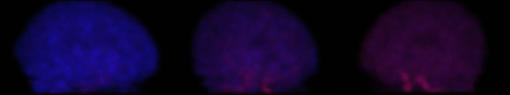

<div class="column-1"><div class="column-1-content">
                            
                                
                                    

<center> 
  <h6>Joint work by</h6>

  <h6>&nbsp;</h6>

  <h6>Thomas Nichols</h6>

  <h6><em>Department of Biostatistics, University of Michigian</em> </h6>

  <h6>Jinyi Qi</h6>

  <h6><em>Center for Functional Imaging, Lawrence Berkley National Laboratory, UC Berkley</em> </h6>

  <h6>Evren Asma &amp; Richard Leahy</h6>

  <h6><em>Signal and Image Processing Institute, University of Southern California</em> </h6>

</center>
<p><br>
   <br>
   </p>

<hr> 
<table width="100%" border="0" style="max-width: none;">
  <tbody>
    <tr valign="center">
      <td> 
        <p align="center"><a href="../../img/SpatTemp/listMovie.mpg"><br>
           List Mode Movie (542KB MPEG)</a> </p>

        <p>This is an estimate of the dynamic distribution of [15]-O labeled water, after the injection of a 5 milliCurie bolus. This axial slice passes through the cerebellum and the inferior temporal poles; it captures the early, transient passage of activity through the internal carotid artery (petrous part), as well as the build up of tracer in cerebellar and brain tissue. </p>

        <p>Relative to usual conventions the image is upsidedown, posterior at the top of the image, anterior at the bottom. </p>

      </td>
    </tr>
    <tr valign="center">
      <td><br>
         
        <p align="center"><a href="../../img/SpatTemp/pet_movie.mpg"><br>
           Full volume List Mode Movie (139KB MPEG)</a> </p>

        <p>This is the same data as above, but now all slices of the brain have been reconstructed and we use a different visualization method. We view the subject from the side and set him rotating; the blue colored region indicates the outline of the head. In red we see the spatiotemporal distribution of the [15]-O-water tracer in the carotid artery and, subsequently, throughout the brain. </p>

        <p>This movie represents approximately 20 seconds in real time. </p>

        <p>&nbsp;</p>

      </td>
    </tr>
    <tr valign="center">
      <td><br>
         
        <p align="center"><a href="../../img/SpatTemp/Raclogs.mpg"><br>
           Raclopride list mode movie (2MB MPEG)</a> </p>

        <p>This is an estimate of the dynamic distribution of [11]-C Raclopride, a dopamine ligand. Note how initially the distribution is nearly uniform throughout the brain, while subsequently the tracer only collects in the striatum. </p>

        <p>This movie represents 90 minutes of data; note the slow shifting of the head to the left and right indicating subject motion. </p>

        <p>Relative to usual conventions the image is upsidedown, posterior at the top of the image, anterior at the bottom. </p>

      </td>
    </tr>
  </tbody>
</table>


                                
                                
                            
                        </div></div>